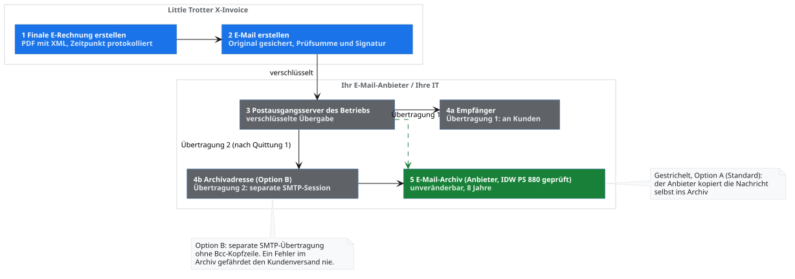
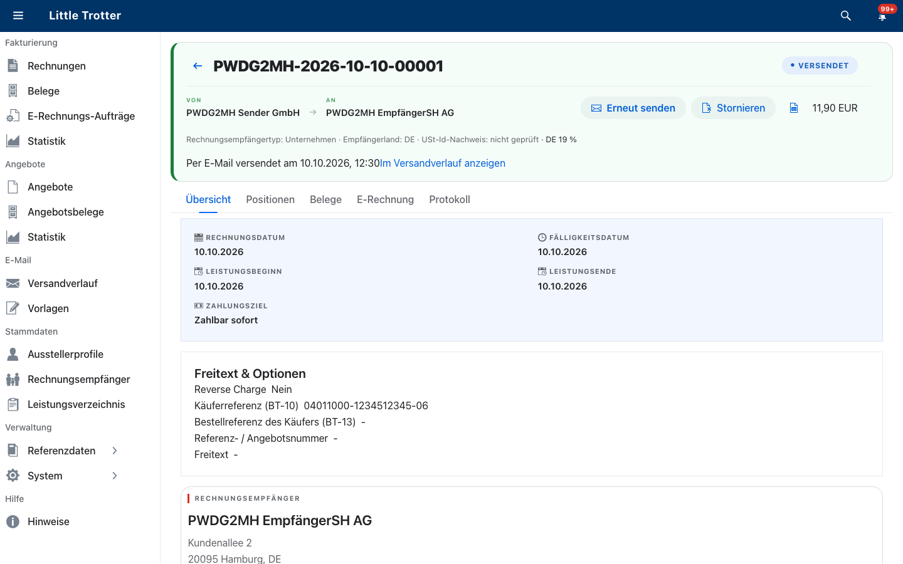
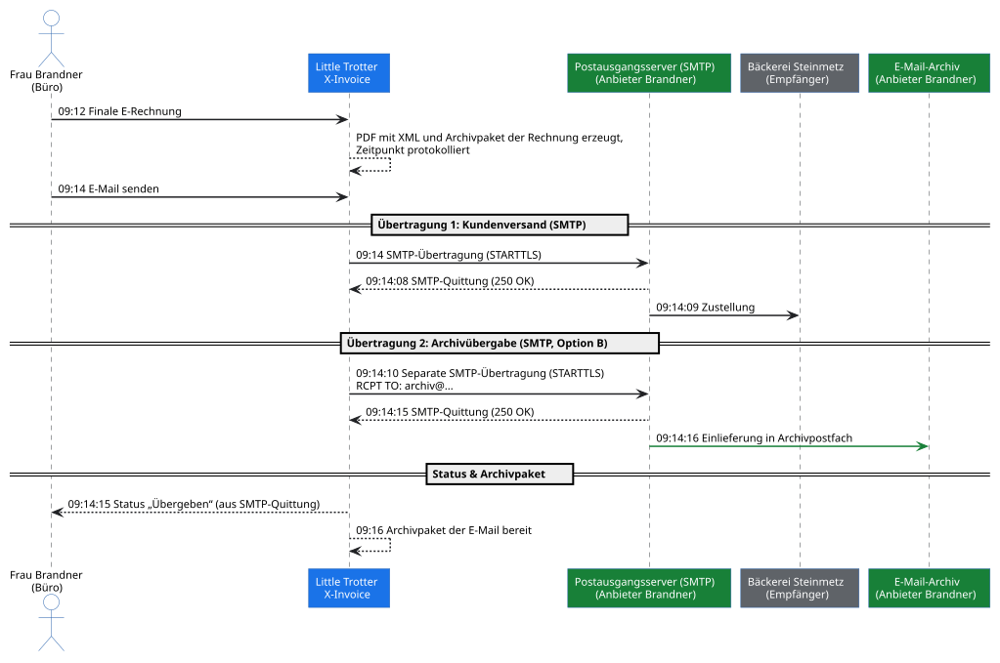
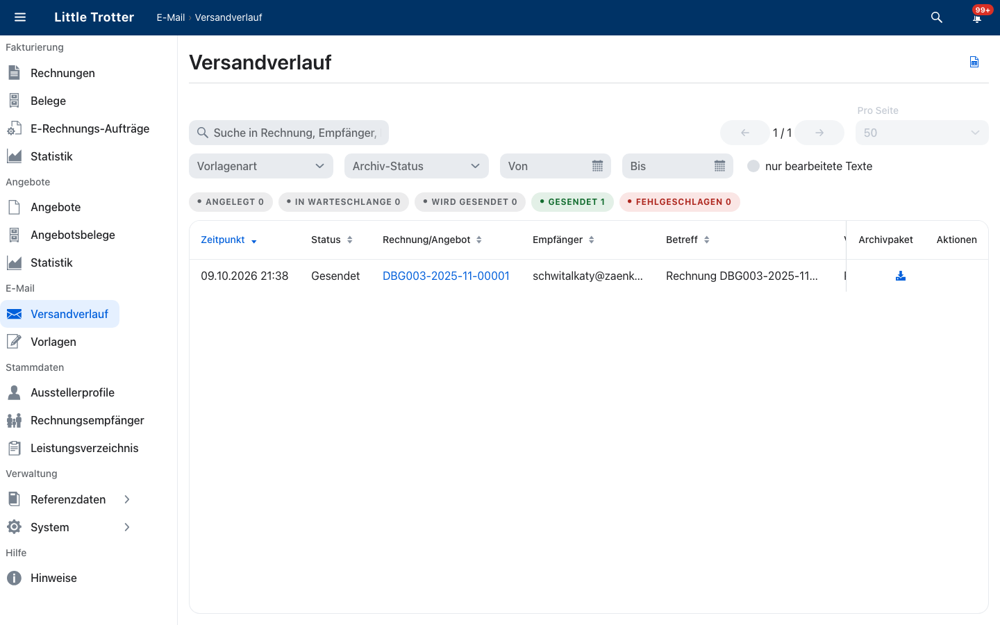
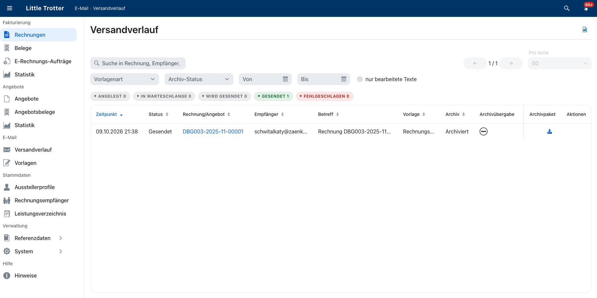
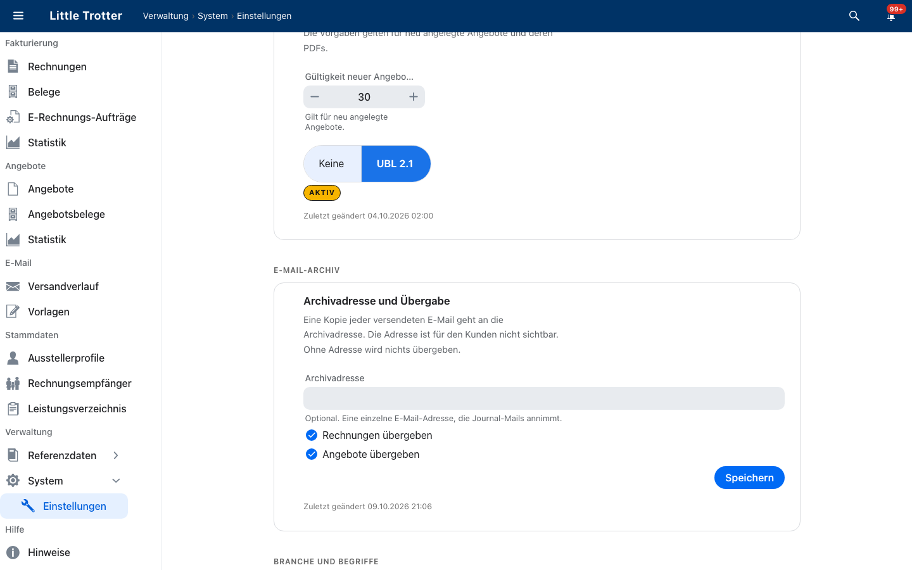

Dieser Leitfaden erklärt, wie jede Rechnung, die Little Trotter X-Invoice per E-Mail versendet, als Kopie in das E-Mail-Archiv Ihres Betriebs gelangt und was Little Trotter dazu nachweist. Er zeigt den Weg Schritt für Schritt, beschreibt die Einrichtung und erklärt, woran Sie den Erfolg erkennen. Das Archiv selbst stellt Ihr E-Mail-Dienstleister; Little Trotter übergibt und protokolliert.
|
Hinweis
|
Hinweise zu Transparenz, Einordnung und Verantwortung
|
1. Auf einen Blick
Little Trotter erstellt und versendet die E-Rechnung und belegt den Versand. Die unveränderbare Aufbewahrung über die achtjährige Aufbewahrungsfrist übernimmt Ihr E-Mail-Dienstleister. Dort liegt der einmalige Aufwand: Das Archiv muss gebucht oder freigeschaltet sein. In Little Trotter ist dafür wenig bis nichts einzurichten.
Ihr E-Mail-Dienstleister ist, wer Ihre E-Mail betreibt: Ihr Internetanbieter, Ihr IT-Dienstleister oder Ihre eigene IT-Abteilung. Dieser Leitfaden verwendet den Begriff für alle drei.
-
0 Klicks zusätzlich im Büro je Versand
-
1 Kopie je E-Mail, unsichtbar für den Empfänger
-
8 Jahre Aufbewahrungsfrist, einzustellen im E-Mail-Archiv des Dienstleisters
Aufbewahrt wird die E-Rechnung selbst: PDF mit eingebettetem XML, als Anhang der E-Mail-Kopie im externen E-Mail-Archiv. Little Trotter erzeugt dazu zwei signierte Archivpakete, eines für die Rechnung und eines für die E-Mail. Sie belegen, dass Rechnung und E-Mail seit ihrer Entstehung unverändert sind.
Automatisierung und Funktionsmerkmale:
-
Automatische Übergabe: Mitarbeitende müssen Rechnungen nicht manuell ablegen. Die Übergabe an das E-Mail-Archiv des Dienstleisters erfolgt bei jedem Rechnungsversand automatisch.
-
Inhaltsgleiche Kopie: Die archivierte Kopie im externen E-Mail-Archiv enthält denselben Text und dieselben Anhänge (inklusive E-Rechnung) wie die Nachricht an Ihren Empfänger. Unterwegs ergänzen die Mailserver lediglich transportrelevante Kopfzeilen.
-
Transparente Protokollierung: Im Versandverlauf von Little Trotter ist für jede Nachricht dokumentiert, ob die Übergabe an die externe Archivadresse erfolgreich war.
-
Entkoppelter Versandablauf: Ein Übertragungsfehler zum externen E-Mail-Archiv hält den eigentlichen Rechnungsversand an den Empfänger nicht auf. Little Trotter wiederholt die Übergabe an das Archiv automatisch und meldet dauerhafte Fehlschläge im Nachrichtenzentrum.
|
Wichtig
|
Drei Fragen an Ihren E-Mail-Dienstleister
Lautet eine Antwort „nein“ oder „weiß nicht“, haben Sie vermutlich noch kein Archiv. Viele Standardtarife für E-Mail enthalten keines; es ist meist ein Zusatzprodukt. Prüfen Sie das Ergebnis mit einem Testversand: Schicken Sie eine Rechnung an eine eigene Adresse und lassen Sie die Nachricht im Archiv suchen. |
1.1. Geltungsbereich
Der Leitfaden gilt für Rechnungen, die Little Trotter per E-Mail versendet. Rechnungen sind acht Jahre aufzubewahren; die Frist beginnt am Ende des Jahres, in dem die Rechnung ausgestellt wurde. Rechnungen, die Sie auf anderem Weg übermitteln, zum Beispiel über ein Portal oder auf Papier, legen Sie selbst im Archiv ab. Für versendete Angebote gilt dasselbe Verfahren; ihre Aufbewahrung beschreibt das Praxishandbuch.
2. Ablauf der Archivübergabe
Das Diagramm zeigt den Weg von der finalen E-Rechnung bis ins Archiv. Der Postausgangsserver ist der Server Ihres E-Mail-Dienstleisters, der die E-Mails Ihres Betriebs ins Internet verschickt.

Das fiktive Beispiel: Der Malerbetrieb Brandner versendet die Rechnung „RE-2026-0471“. Die Archivadresse ist archiv@brandner-maler.example.
2.1. Stationen
-
Finale E-Rechnung. Die zuständige Person im Büro erstellt die finale E-Rechnung RE-2026-0471; Little Trotter erzeugt ein PDF/A-3 (ein PDF für die Langzeitaufbewahrung) mit eingebettetem XML im Format Factur-X oder XRechnung und prüft es. Warum: Ab jetzt darf sich der Inhalt nicht mehr ändern. Spur: der protokollierte Zeitpunkt, zu dem die E-Rechnung final wurde.
-
E-Mail erstellen. Little Trotter baut die vollständige Nachricht aus Text und PDF mit XML und sichert das Original. Warum: Es soll später belegbar sein, was genau verschickt wurde. Spur: Prüfsummen (digitale Fingerabdrücke) und eine digitale Signatur (ein Echtheitsnachweis).
-
Postausgangsserver. Little Trotter übergibt die Nachricht über eine verschlüsselte Verbindung an den Postausgangsserver Ihres E-Mail-Dienstleisters. Warum: Nur dieser Server darf E-Mails des Betriebs ins Internet schicken. Spur: Annahme und Antwort des Servers, mit Uhrzeit protokolliert.
-
Zustellung an den Empfänger (Übertragung 1). Der Postausgangsserver stellt die Nachricht dem Rechnungsempfänger zu. Für ihn ist es eine gewöhnliche E-Mail mit PDF und XML.
-
Übergabe an die Archivadresse (Übertragung 2). Ist eine Archivadresse konfiguriert (Option B), initiiert Little Trotter erst nach erfolgreicher Quittung von Schritt 4 eine separate, zweite Übertragung derselben Nachricht an die Archivadresse. Die Übergabe erfolgt rein auf SMTP-Transportebene (
RCPT TO), vollständig ohneBcc:-Kopfzeile. Warum: Eine eigenständige Übertragung entkoppelt den Kundenversand technisch vom Archiv. Scheitert das Archivpostfach, bleibt die Rechnung an den Kunden rechtswirksam versendet und Little Trotter wiederholt die Archivübertragung isoliert. Bei Option A übernimmt der E-Mail-Dienstleister die Archivierung serverseitig selbst. -
Rückmeldung im Versandverlauf. Sobald der Mailserver des Archivs die Kopie per SMTP-Quittung angenommen hat, speichert Little Trotter das Ergebnis als Status „Übergeben“ im Versandverlauf.
|
Hinweis
|
Sicherheits- und Ausfallsaspekt: Separate Übertragung auf Transportebene statt herkömmlichem Bcc
Little Trotter setzt kein herkömmliches Bcc im E-Mail-Programm ein:
|

Begleitend zum Versandablauf erzeugt Little Trotter automatisch das signierte Archivpaket der E-Mail. Zusammen mit dem Archivpaket der Rechnung sichert es den vollständigen Entstehungsprozess ab (ausführlich im Kapitel Archivpakete).
3. Archivierungsoptionen
Die unveränderbare Aufbewahrung lässt sich auf zwei Wegen realisieren: automatisiert über den E-Mail-Dienstleister oder über eine dedizierte Einlieferungsadresse an externe Zielsysteme.
Option A: Der E-Mail-Dienstleister archiviert serverseitig (Journaling). Der Mail-Provider übernimmt jede ausgehende Nachricht automatisch in sein integriertes E-Mail-Archiv. Little Trotter erfordert dafür keine gesonderte Konfiguration. Voraussetzung ist, dass Ihr Tarif oder Lizenzpaket ein entsprechendes E-Mail-Archiv enthält und dieses aktiv geschaltet ist. In Standardtarifen ist dies häufig nicht der Fall.
Option B: Little Trotter liefert an eine Archivadresse. Ihr Buchhaltungssystem, Ihr Dokumentenmanagementsystem (DMS), Ihre IT-Abteilung oder ein externer Archivdienst stellen eine spezifische E-Mail-Adresse für die Belegarchivierung bereit. Little Trotter übergibt jede Rechnungs-E-Mail zusätzlich auf Transportebene als unsichtbare Kopie dorthin. Im Versandverlauf wird dokumentiert, ob der empfangende Server die Kopie erfolgreich angenommen hat. Option B kann eigenständig genutzt oder als zusätzliche Absicherung parallel zu Option A eingesetzt werden.
| Ausgangslage & Infrastruktur | Empfohlene Option | Voraussetzungen & Compliance (DSGVO / GoBD) |
|---|---|---|
Microsoft 365 oder Google Workspace |
Option A, optional zusätzlich Option B |
Lizenzprüfung: Reine Standardpostfächer genügen nicht. Das Archivieren erfordert Lizenzen mit Compliance-Funktionen (z. B. Exchange Online Archiving, Microsoft Purview oder Google Vault) und aktivierte Aufbewahrungsrichtlinien. |
Klassischer E-Mail-Provider / Webhoster |
Option A (mit Zusatzarchiv) oder Option B |
Zusatzmodul erforderlich: Normale IMAP- oder POP3-Postfächer sind keine Archive. Der Provider muss ein echtes E-Mail-Archiv bereitstellen (oft als zubuchbares Modul mit IDW PS 880-Prüfung). |
Buchhaltungssystem oder DMS mit Belegeingang |
Option B |
Schnittstellenadresse: Das Zielsystem stellt eine dedizierte E-Mail-Adresse für den Belegeingang bereit. |
Eigene IT-Infrastruktur / On-Premise |
Option A (Gateway-Journaling) oder Option B (Archivadresse) |
Zentrale Steuerung: Die interne IT konfiguriert das Journaling am Mail-Gateway oder stellt der Anwendung eine gesicherte Archivadresse bereit. |
4. Praxisbeispiel Rechnungsversand
Die ordnungsgemäße Archivierung bedeutet im Arbeitsalltag keinen Mehraufwand: Im Büro sind lediglich zwei gewohnte Klicks erforderlich – E-Rechnung finalisieren und senden. Es muss weder eine manuelle Kopie angefertigt, eine Datei im Archiv abgelegt noch eine Adresse in Cc oder Bcc gesetzt werden; alle Nachweise und Übergaben erfolgen vollautomatisch im Hintergrund.
Am konkreten Beispiel: Der Malerbetrieb Brandner versendet am 9. Oktober 2026 die Rechnung RE-2026-0471 an die Bäckerei Steinmetz und nutzt dafür die Archivadresse (Option B). Bei Option A archiviert der E-Mail-Dienstleister die Nachricht beim Versand selbst, und die Übergabe an die Archivadresse entfällt. Die Archivpakete sind in beiden Fällen dieselben. Im Büro übernimmt Frau Brandner den Versand:
-
09:12 Frau Brandner finalisiert die E-Rechnung (1. Klick). Little Trotter erzeugt PDF mit XML und das Archivpaket der Rechnung; der Zeitpunkt wird protokolliert und steht im Manifest dieses Pakets.
-
09:14 Frau Brandner klickt auf „E-Mail senden“ (2. Klick). Little Trotter baut die Nachricht, sichert das Original und berechnet Prüfsummen und Signatur; diese liegen später im Archivpaket der E-Mail.
-
09:14:08 Der Postausgangsserver bestätigt die Annahme des Kundenversands per SMTP-Quittung (
250 OK); diese Serverantwort steht später im Manifest der E-Mail. -
09:14:09 Der Postausgangsserver stellt die Nachricht der Bäckerei Steinmetz zu.
-
09:14:15 Little Trotter übergibt die Kopie in einer separaten SMTP-Session (STARTTLS) an die Archivadresse; der Server quittiert die Annahme per SMTP (
250 OK), und im Versandverlauf steht der Status „Übergeben“. -
09:16 Das Archivpaket der E-Mail mit allen Spuren liegt zum Herunterladen bereit.

5. Belegstatus und Audit-Trail
Für die steuerrechtliche und buchhalterische Aufbewahrung ist ausschließlich das elektronische Rechnungsdokument selbst maßgeblich – das strukturierte XML (bei reiner XRechnung) bzw. das PDF/A-3 mit dem eingebetteten XML-Datensatz (bei Factur-X / ZUGFeRD). Weder die begleitende E-Mail noch interne Datenbankeinträge ersetzen den Originalbeleg.
5.1. Der fünfstufige Prüfpfad (Audit-Trail)
Um den Nachweis über Herkunft, Unverfälschtheit und ordnungsgemäße Zustellung zu führen, greift ein geschlossener, fünfstufiger Prüfpfad (Audit-Trail). Jeder Schritt sichert die Integrität und Nachvollziehbarkeit des Folgeprozesses ab und macht nachträgliche Veränderungen prüfungsfest erkennbar:
-
Festschreibung der E-Rechnung mit Zeitstempel: Sobald die E-Rechnung finalisiert wird, ist sie in der Anwendung unveränderbar und manipulationssicher geschützt. Der Zeitpunkt wird sekundengenau protokolliert. Fehler werden ausschließlich über eine eigenständige Storno- oder Korrekturrechnung neutralisiert, während das ursprüngliche Original unverändert erhalten bleibt. Direkte Datenbankeingriffe würden von Prüfsumme, Signatur und Archivkopie abweichen und sofort auffallen.
-
Deterministische Belegerzeugung: Little Trotter erzeugt das maßgebliche PDF/A-3 mit XML ausschließlich aus dem festgeschriebenen Stand der Datenbank.
-
Kryptografische Versiegelung (Zusatznachweis): Für die Rechnungsdatei und die generierte E-Mail berechnet Little Trotter SHA-256 Prüfsummen und versiegelt diese mit einer Ed25519-Signatur in zwei getrennten Archivpaketen (
.tar.gz). -
Protokollierung der Transportdaten: Finalisierung, Sendezeitpunkt, Message-ID und die SMTP-Serverquittung werden unveränderlich im Manifest (
manifest.json) festgehalten. -
Unveränderbare Ablage im externen Archiv: Die Kopie wird über die SMTP-Transportebene an das externe Archiv übergeben und verlässt damit den Einflussbereich der Fakturierungssoftware.
5.2. Nachweisführung und Abgleich
Der Nachweis stützt sich auf zwei voneinander getrennte Quellen mit klarer Aufgabenteilung:
-
Das externe Archiv bewahrt das maßgebliche Rechnungsdokument unveränderbar auf. Dort liegt die E-Mail-Kopie samt PDF und XML, die unabhängig von Little Trotter zum Einlieferungszeitpunkt festgeschrieben wurde.
-
Little Trotter sichert den Entstehungs- und Übertragungsprozess ab und liefert den mathematischen Beweis, dass Rechnungsdaten und Versandnachricht seit ihrer Finalisierung unberührt geblieben sind.
Dass die archivierte Kopie mit dem Original übereinstimmt, belegt der direkte Abgleich: Über die im Manifest dokumentierte Nachrichten-ID (Message-ID) lässt sich die Nachricht im Archiv auffinden und mit der Originaldatei aus dem E-Mail-Archivpaket vergleichen. Text, PDF und XML sind identisch; Unterschiede beschränken sich auf reine Transport-Kopfzeilen der beteiligten Mailserver.
| Sachverhalt & Fragestellung | Maßgeblicher Beleg & Nachweis | Speicherort & Referenz |
|---|---|---|
Rechnungsinhalt (Maßgeblicher Beleg) |
Die E-Rechnung: XML und PDF als unveränderter Beleg. Ergänzend PDF und XML im Archivpaket der Rechnung mit Prüfsummen und Signatur. |
Externes Archiv (Primärbeleg); ergänzend Little Trotter: Archivpaket der Rechnung |
Tatsächlich versandte Nachricht |
Die vollständige Original-E-Mail ( |
Little Trotter: Archivpaket der E-Mail (Download im Versandverlauf) |
Versandzeitpunkt und Adressat |
Exakter Sendezeitpunkt, Empfängeradresse, Message-ID und SMTP-Quittung des Mailservers. |
Little Trotter: Manifest ( |
Integrität und Unveränderbarkeit |
Rechnerischer Nachweis: SHA-256 Prüfsummen und Ed25519-Signatur stimmen exakt mit den archivierten Dateien überein. |
Little Trotter: Prüfsummen- und Signaturdateien im Archivpaket |
Übereinstimmung mit dem Archiv |
Nachricht im Archiv, aufgefunden über die Message-ID aus dem Manifest, im Vergleich mit der Originaldatei. |
Externes Archiv des Dienstleisters oder Zielsystems |
Berechtigungssteuerung |
Nachweis, dass nur autorisierte Administratoren Konfigurationen und Archivadressen anpassen dürfen. |
Little Trotter: Systemeinstellungen |
Der Nachweis der Aufbewahrung stützt sich stets auf das externe Archiv, in dem die Originaldokumente lagern. Little Trotter stellt die Protokollierung und den nachvollziehbaren Audit-Trail bereit, die Sie in Ihrer betrieblichen Verfahrensdokumentation beschreiben.
6. Archivpakete
Little Trotter erzeugt zwei getrennte Archivpakete:
1. Archivpaket der Rechnung: belegt, dass PDF und XML der finalen E-Rechnung seit ihrer Erzeugung unverändert sind.
2. Archivpaket der E-Mail: belegt, dass die versendete E-Mail unverändert ist, wann sie versendet wurde und an wen.
Warum zwei Pakete? Rechnungserstellung und E-Mail-Versand sind in Little Trotter eigenständige Teilsysteme (Self-contained Systems) mit eigener Datenhaltung. Jedes Teilsystem sichert seinen Teil selbst und hängt dabei nicht vom anderen ab. Deshalb sind die beiden Pakete technisch nicht miteinander verknüpft. PDF und XML in der versendeten E-Mail stammen aus der finalen E-Rechnung.
| Archivpaket der Rechnung | Archivpaket der E-Mail | |
|---|---|---|
Entsteht |
Beim Erzeugen der finalen E-Rechnung, nicht bei Entwürfen. |
Nach dem Versand der E-Mail. |
Inhalt |
PDF und XML der finalen E-Rechnung, Prüfsummen, Signaturen und Manifest. |
Die versendete E-Mail (eml), die Angaben aus dem Versanddialog, Prüfsummen, Signaturen und Manifest. |
Belegt |
Was in Rechnung gestellt wurde, und dass PDF und XML seither unverändert sind. |
Dass die versendete E-Mail unverändert ist, wann sie versendet wurde und an wen. |
Bedeutung für die Prüfung |
Ergänzender Nachweis zur Rechnung im Archiv. |
Ergänzender Nachweis zum Versand. |
Herunterladen |
In der Übersicht „E-Rechnungs-Aufträge“ der Rechnung über die Schaltfläche „TAR.GZ“. |
Im Versandverlauf über das Symbol „Archivpaket herunterladen“. |
6.1. Archivpaket der Rechnung
Little Trotter erzeugt das Paket, sobald die finale E-Rechnung generiert wird. Es ist eine Datei im Format tar.gz. In der Übersicht „E-Rechnungs-Aufträge“ laden Sie es über die Schaltfläche „TAR.GZ“ herunter (Hinweistext: „Signiertes Archivpaket herunterladen (tar.gz)“).
Aufbau des Pakets, hier mit der Beispielnummer RE-2026-0471:
manifest.json original/RE-2026-0471.pdf die Rechnung als PDF original/RE-2026-0471.pdf.sha256 Prüfsumme des PDF (Format von sha256sum) original/RE-2026-0471.xml die Rechnung als XML original/RE-2026-0471.xml.sha256 Prüfsumme des XML signed/RE-2026-0471.pdf.sig digitale Signatur (Ed25519) über das PDF signed/RE-2026-0471.pdf.sha256.sig signed/RE-2026-0471.xml.sig digitale Signatur (Ed25519) über das XML signed/RE-2026-0471.xml.sha256.sig signed/manifest.json.sig Signatur über das Manifest
Das Manifest enthält Rechnungsnummer, Rechnungsart (Typcode), Zeitpunkt, Kennung des Erzeugungsauftrags, die Prüfsummen, das Signaturverfahren und den Schlüssel-Fingerabdruck.
6.2. Archivpaket der E-Mail
Zu jeder erfolgreich versendeten E-Mail erzeugt die Applikation im Hintergrund das signierte Archivpaket der E-Mail, eine Datei mit dem Namen <Kennung>.tar.gz. Im Versandverlauf laden Sie es über das Symbol „Archivpaket herunterladen“ in der Spalte „Archivpaket“ herunter. Die Aktion „Erneut archivieren“ erzeugt das Paket aus der gespeicherten Original-E-Mail neu. Bei gleichem Inhalt entsteht dabei byte-identisch (Zeichen für Zeichen) dasselbe Paket.
Aufbau des Pakets, hier mit der Beispielkennung a3f1c2d4-…:
manifest.json original/a3f1c2d4-….eml die E-Mail exakt so, wie sie verschickt wurde (Text, PDF/A-3 mit XML) original/a3f1c2d4-….eml.sha256 Prüfsumme der E-Mail (Format von sha256sum) original/a3f1c2d4-…-authored.json was im Versanddialog geschrieben bzw. geändert wurde original/a3f1c2d4-…-authored.json.sha256 signed/a3f1c2d4-….eml.sig digitale Signatur (Ed25519) über die E-Mail signed/a3f1c2d4-….eml.sha256.sig signed/a3f1c2d4-…-authored.json.sig signed/a3f1c2d4-…-authored.json.sha256.sig signed/manifest.json.sig Signatur über das Manifest
Das Manifest (manifest.json) ist das Inhaltsverzeichnis des Pakets. Es enthält Kennung des Versandvorgangs, Nachrichten-ID, Empfänger, Erstellungs- und Sendezeitpunkt, die Antwort des Mailservers, Vorlagenart, Vorlagensprache und Vorlagenversion, die Angabe, ob der Text von Hand geändert wurde, die Prüfsummen aller Dateien sowie Signaturverfahren und Schlüssel-Fingerabdruck. Die Felder stehen in fester Reihenfolge, damit auch das Manifest reproduzierbar ist.
6.3. Prüfsumme und Signatur
Die folgenden Abschnitte gelten für beide Archivpakete.
Warum eine Prüfsumme? Die Prüfsumme (SHA-256) ist ein Fingerabdruck der Datei. Jede Änderung, und sei es nur ein Zeichen, ergibt einen anderen Wert. Sie lässt sich mit Standardwerkzeugen des Betriebssystems nachrechnen.
Warum eine Signatur? Die digitale Signatur (Ed25519) belegt, dass das Paket mit dem Schlüssel Ihrer Little-Trotter-Installation signiert und seit dem Signieren nicht verändert wurde. Der Fingerabdruck des verwendeten Schlüssels steht im Manifest.
Zusammen ergibt das drei Aussagen: Vollständigkeit (nichts fehlt), Unverändertheit (nichts wurde verändert) und Herkunft (signiert mit dem Schlüssel dieser Installation).
Was die Signatur nicht belegt. Den Schlüssel verwaltet, wer Little Trotter betreibt, also Ihr Betrieb oder dessen IT. Wer den Schlüssel besitzt, könnte ein verändertes Paket neu signieren. Die Signatur enthält zudem keinen Zeitstempel einer unabhängigen Stelle. Den unabhängigen Nachweis liefert deshalb das Archiv: Eine Abweichung zwischen Paket und Archivkopie fiele beim Abgleich auf.
Öffentlichen Schlüssel hinterlegen. Little Trotter signiert die Archivpakete (Rechnung und E-Mail) mit einem zentralen Schlüsselpaar der Installation. Geben Sie den öffentlichen Schlüssel (ARCHIVE_ED25519_PUBLIC_KEY) und seinen Fingerabdruck bei der Einrichtung einmal an Ihre Steuerberatung und nehmen Sie ihn in Ihre Verfahrensdokumentation auf. So ist später belegbar, welcher Schlüssel in welchem Zeitraum galt. Bei einem Schlüsselwechsel hinterlegen Sie den neuen Schlüssel ebenso, mit Datum. Ältere Pakete bleiben mit dem früheren öffentlichen Schlüssel prüfbar; bewahren Sie ihn deshalb auf. Ist ein privater Schlüssel abhandengekommen, wechseln Sie ihn sofort und dokumentieren Sie den Zeitpunkt.
|
Tipp
|
Für die IT: Der öffentliche Schlüssel steht in der Konfiguration der Installation in der Umgebungsvariable ARCHIVE_ED25519_PUBLIC_KEY.
|
Kein signierter Versand an Empfänger. Little Trotter versendet Rechnungen an Kunden ohne Signaturdateien. Für den Empfänger würde eine Signaturprüfung technischen Mehraufwand bedeuten (Verwaltung von digitalen Prüfzertifikaten), und viele automatisierte Rechnungseingangssysteme weisen signierte E-Mails oder zusätzliche Signaturanhänge ab. Der Kunde erhält daher eine standardkonforme E-Mail mit der Rechnung als PDF/A-3 und XML. Die digitale Signatur nutzt Little Trotter ausschließlich intern für die Archivpakete (Audit-Trail). Sie verbleibt im Betrieb und dient als Nachweis bei Prüfungen. Der Rechnungsinhalt im internen Archivpaket ist byte-identisch mit dem Dokument, das der Empfänger erhalten hat.
So wird ein Paket geprüft: Die Prüfsumme wird nachgerechnet. Stimmt sie, ist die Datei unverändert. Die Signatur wird mit dem hinterlegten öffentlichen Schlüssel geprüft. Stimmt sie, wurde das Paket mit diesem Schlüssel signiert und seither nicht verändert.
|
Tipp
|
Für die IT genügt zum Nachrechnen der Prüfsummen im entpackten Ordner original der Aufruf sha256sum -c auf den .sha256-Dateien.
|
Beispiel: Die Betriebsprüfung fragt, was am 9. Oktober an die Bäckerei Steinmetz ging. Sie suchen die Nachricht im Archiv und zeigen Rechnung und Anhänge. Aus dem Archivpaket der E-Mail zeigen Sie Sendezeitpunkt, Empfänger und Antwort des Mailservers. Ihre IT rechnet die Prüfsumme der Original-E-Mail nach und vergleicht Text und Anhänge mit der Nachricht im Archiv. Stimmen beide überein, ist belegt, dass die aufbewahrte Rechnung die versendete ist.
Aufbewahrung der Archivpakete. Die Archivpakete sind Nachweismittel, kein Aufbewahrungsmedium. Little Trotter hält sie bereit, solange es betrieben wird. Die Aufbewahrung der Rechnung über acht Jahre leistet das Archiv. Wird Little Trotter abgeschaltet oder durch eine andere Software ersetzt, sichert der Betreiber vorher die Archivpakete aus dem Dokumentenspeicher und übergibt sie an das Archiv.
7. Archivübergabe im Versandverlauf
Der Versandverlauf dokumentiert für jede versendete Nachricht den Status der Transportübergabe an die Archivadresse.
7.1. Getrennter E-Mail-Eingang für Rechnungen und Angebote
Wird eine dedizierte Archivadresse hinterlegt (z. B. für Ihr Buchhaltungssystem, DMS oder ein separates Archivpostfach), adressiert Little Trotter diese unsichtbar auf SMTP-Transportebene. Dies bietet klare betriebliche Vorteile:
-
Isolierter Belegfluss: Angebote und Rechnungen werden in einem eigenen Zielpostfach gebündelt – vollständig getrennt vom allgemeinen geschäftlichen E-Mail-Verkehr der Mitarbeiter.
-
Gezielter Zugriff für Buchhaltung und DMS: Buchhaltung und Steuerberatung greifen direkt auf die relevanten Ausgangsbelege zu, ohne E-Mails aus dem allgemeinen Posteingang filtern zu müssen.
-
Bestehendes Provider-Archiv: Verfügt Ihr E-Mail-System bereits über ein serverseitiges Gesamtarchiv, das alle ausgehenden E-Mails automatisch erfasst, ist die gesetzliche Aufbewahrung bereits abgedeckt. Die zusätzliche Übergabe an eine dedizierte Adresse dient in diesem Fall der direkten Belegübergabe an nachgelagerte Systeme.
7.2. Status der Archivübergabe
In der Spalte „Archivübergabe“ signalisiert ein Symbol den aktuellen Zustand der Einlieferung:
| Status | Bedeutung & Systemverhalten |
|---|---|
Keine Archivadresse |
Es ist keine gesonderte Einlieferungsadresse konfiguriert. Dies ist der vorgesehene Zustand, wenn Ihr Mail-Provider alle ausgehenden Nachrichten bereits serverseitig archiviert. Andernfalls findet keine Übergabe an ein externes Zielsystem statt. |
Ausstehend |
Die Übergabe an die Archivadresse wird aktuell im Hintergrund verarbeitet oder befindet sich in der Sendewarteschlange. |
Übergeben |
Der Mailserver des Zielsystems (Archiv, Buchhaltung oder DMS) hat die Kopie per SMTP-Quittung erfolgreich entgegengenommen. |
Fehlgeschlagen |
Die Zustellung an die Archivadresse konnte nach mehreren automatischen Versuchen nicht abgeschlossen werden (z. B. Postfach voll oder Server temporär nicht erreichbar). Der Vorgang wird im Nachrichtenzentrum gemeldet. Über die Aktion „Erneut übergeben“ lässt sich die Übertragung wiederholen, ohne dass der Kunde eine erneute E-Mail erhält. |
Abgeschaltet |
Die automatisierte Belegübergabe ist in den Systemeinstellungen für diese Belegart (z. B. Angebote) deaktiviert. |


8. Einrichtung
Bei Ihrem E-Mail-Dienstleister (beide Optionen). Klären Sie die drei Fragen und lassen Sie das Archiv freischalten, falls es fehlt. Das ist der eigentliche Aufwand, und er liegt außerhalb von Little Trotter.
Option A. In Little Trotter ist nichts einzurichten. Machen Sie einen Testversand und lassen Sie die Nachricht im Archiv suchen.
Option B, drei Schritte mit Administratorrechten:
-
Adresse holen. Lassen Sie sich von Ihrem E-Mail-Dienstleister die Archivadresse nennen.
-
Adresse eintragen. Tragen Sie sie unter im Abschnitt „E-Mail-Archiv“ im Feld „Archivadresse“ ein.

Abbildung 6. Einstellungen: Archivadresse und Übergabe -
Schalter prüfen. „Rechnungen übergeben“ und „Angebote übergeben“ sind standardmäßig an. Machen Sie danach einen Testversand; im Versandverlauf muss „Übergeben“ erscheinen.
Für beide Optionen: Hinterlegen Sie den öffentlichen Schlüssel wie unter Öffentlichen Schlüssel hinterlegen beschrieben.
9. Leistungsumfang und Systemgrenzen
Die ordnungsgemäße Erstellung, Übermittlung und Aufbewahrung elektronischer Rechnungen erfordert ein abgestimmtes Zusammenspiel zwischen Fakturierungssoftware, E-Mail-Infrastruktur und dem betrieblichen Archivsystem.
| Verantwortung: Little Trotter | Verantwortung: Betrieb & externes Archivsystem |
|---|---|
Konforme E-Rechnungserstellung: |
Langzeitarchivierung: |
Festschreibung auf Anwendungsebene: |
Löschschutz auf Speicherebene: |
Integritäts- und Herkunftsnachweis: |
Schlüssel- und Rechteverwaltung: |
Automatisierte Belegübergabe: |
Verfügbarkeit des Zielsystems: |
Protokollierung & Fehlermanagement: |
Behördlicher Datenzugriff & Verfahrensdokumentation: |
Integrierte Nachweispakete: |
System-Backups: |
10. Kurzfassungen
Little Trotter erstellt und versendet Ihre E-Rechnungen und sichert jeden Schritt mit signierten Nachweispaketen ab, während die achtjährige gesetzliche Aufbewahrung des maßgeblichen Belegs im Archiv Ihres E-Mail-Dienstleisters oder Buchhaltungssystems erfolgt.
Die gesetzliche Aufbewahrung Ihrer E-Rechnungen über acht Jahre übernimmt das Archiv Ihres E-Mail-Dienstleisters, Ihres Buchhaltungssystems oder Ihrer IT-Abteilung. Für steuerliche Zwecke ist allein die elektronische Rechnungsdatei maßgeblich, die Little Trotter nach erfolgreichem Kundenversand über eine separate Transportübertragung an die Archivadresse übergibt. Die Anwendung protokolliert jeden Schritt mit Zeitstempel und Serverantwort und liefert als zusätzlichen Nachweis kryptografisch signierte Archivpakete mit Prüfsummen für Rechnung und E-Mail.
11. Begriffe
Die Fachbegriffe dieses Leitfadens (Archivadresse, Bcc, E-Mail-Dienstleister, Journaling, Postausgangsserver, Prüfsumme, digitale Signatur, PDF/A-3, Factur-X und XRechnung, IDW PS 880, GoBD, Verfahrensdokumentation, Archivpaket der Rechnung, Archivpaket der E-Mail, Manifest, Nachrichtenzentrum, Versandverlauf) erklärt das Fachglossar an einer Stelle für alle Dokumente.